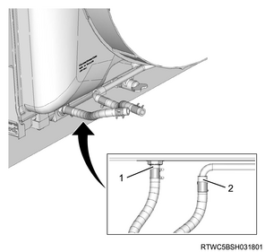
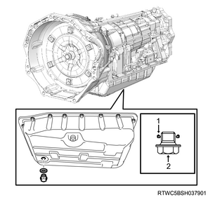

1. Clean the ATF cooler pipe using cleaning fluid.
Note
Compressed air： 200 kPa { 2.0 kgf/cm2 / 29 psi } or less
Note
1. Install the ATF hose to the oil pipe.
Note

1. Temporarily tighten the ATF cooler pipe to the transmission.
Note
2. Securely tighten the ATF cooler pipe to the transmission.
Note
Tightening torque： 23 N・m { 2.3 kgf・m / 17 lb・ft } Bolt
Tightening torque： 44 N・m { 4.5 kgf・m / 32 lb・ft } Flare nut
3. Connect the ATF cooler pipe to the ATF hose.
Note
1. Clean the drain plug using cleaning fluid.
2. Install the drain plug to the oil pan.
Note
Caution
Tightening torque： 20 N・m { 2.0 kgf・m / 15 lb・ft }

1. Replenish the transmission with the ATF.
Caution
| Fluid capacity [Reference value] | |||
| Engine | Specification | Oil pan type | ATF |
| 4JJ1 | High ride | Deep | ： 10.55 to 10.85 L { 2.79 to 2.87 US gal / 2.32 to 2.39 Imp.gal } |
| 4JK1 | High ride | Deep | ： 10.05 to 10.35 L { 2.65 to 2.73 US gal / 2.21 to 2.28 Imp.gal } |